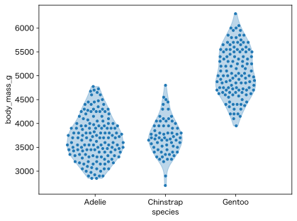

Sinaplot（シーナプロット）
Sinaplotは、箱ひげ図に代わる統計グラフの一種で、バイオリンプロットの中に個々のデータ点を（水平位置はランダムに）プロットするものです（Sidiropoulos et al, SinaPlot: An Enhanced Chart for Simple and Truthful Representation of Single Observations Over Multiple Classes, 2018）。Claus O. Wilke の Fundamentals of Data Visualization (O'Reilly, 2019) p.87 脚注によれば “The name sina plot is meant to honor Sina Hadi Sohi, a student at the University of Copenhagen, Denmark, who wrote the first version of the code that researchers at the university used to make such plots (Frederik O. Bagger, personal communication).” とのことで、論文第2著者の Sina（シーナ）さんに因むようです。
これはパーマーペンギンの体重分布のSinaplotです（バイオリンプロットを薄く重ね書きしていますが violin=False で消せます。バイオリンの両端をもう少し伸ばす方法は下のソースにコメントで書いてあります）。

上のものは通常の乱数を使ったもの、次のものは点をなるべく一様に分布させたものです（jitter_method="even"）。

オリジナルの著者たちによる sinaplot パッケージがR用に作られています。Rのggplot2でもsinaplotが描けます。
後で例を挙げますが、Python用にはRのggplot2を模した plotnine パッケージでsinaplotが描けます。Seabornを拡張した seaborn_sinaplot パッケージもありましたが、最新のSeabornでは使えなくなっています（Seaborn 0.12.2までなら動きますが、新しめのNumPyで使うには2箇所の np.bool を bool に書き換える必要があります）。
このページの図は、独自実装の次のモジュール sinaplot.py を使って描きました（GPT-5.5 HighとGemini 3.1 Pro (High)に手伝ってもらいました。jitter_method="even" で点をほぼ一様に並べます。以前のChatGPT-4oに手伝ってもらったものはこちらです）：
import numpy as np
import matplotlib.pyplot as plt
from scipy.stats import gaussian_kde
def sinaplot(x, y, data, violin=True, max_width=0.8, title=None,
show_grid=False, ax=None, random_seed=None,
jitter_method="random", point_size=10):
"""
Draws a sinaplot: a jittered dot plot with optional violin shape background.
Parameters:
- x: str. Categorical column name in data.
- y: str. Numerical column name in data.
- data: pandas.DataFrame. Input data.
- violin: bool. Whether to draw violin background. Default True.
- max_width: float. Maximum horizontal jitter width. Default 0.8.
- title: str or None. Plot title.
- show_grid: bool. Whether to show grid.
- ax: matplotlib.axes.Axes or None. Axes to plot into. If None, uses current Axes.
- random_seed: int or None.
- jitter_method: {"even", "random"}.
- point_size: float. Marker size passed to matplotlib scatter.
Returns:
- ax: The matplotlib Axes used.
"""
if max_width <= 0:
raise ValueError("max_width must be positive")
if jitter_method not in {"even", "random"}:
raise ValueError("jitter_method must be 'even' or 'random'")
rng = np.random.default_rng(random_seed)
if ax is None:
ax = plt.gca()
data = data.dropna(subset=[x, y])
categories = np.sort(data[x].unique())
default_color = plt.rcParams['axes.prop_cycle'].by_key()['color'][0]
def offset(category_index, data, scale=1.0):
return category_index + scale * data
def make_kde(values):
if len(values) < 2 or np.ptp(values) == 0:
return None
return gaussian_kde(values)
def random_jitter(widths):
return (rng.random(len(widths)) * 2 - 1) * widths
def even_jitter(values, widths, category_index,
iterations=8, candidate_count=31):
"""
Start from random jitter, then repeatedly minimize each point's
pixel-space inverse-square-distance energy inside the violin.
"""
values = np.asarray(values, dtype=float)
widths = np.asarray(widths, dtype=float)
n = len(values)
jitter = random_jitter(widths)
if n < 2:
return jitter
x0_pixel = ax.transData.transform((category_index, values[0]))[0]
x1_pixel = ax.transData.transform((category_index + 1, values[0]))[0]
x_pixels_per_data = x1_pixel - x0_pixel
y_pixels = ax.transData.transform(
np.column_stack([np.full(n, category_index), values])
)[:, 1]
pixel_softening = max(float(np.sqrt(point_size)) * 0.6, 1.0)
dy = y_pixels[:, None] - y_pixels[None, :]
dy_sq = dy * dy + pixel_softening * pixel_softening
np.fill_diagonal(dy_sq, np.inf)
def candidate_scores(i, candidates):
dx = (candidates[:, None] - jitter) * x_pixels_per_data
distance2 = dx * dx + dy_sq[i]
repulsion = np.sum(1 / distance2, axis=1)
relative_x = np.abs(candidates) / widths[i]
wall_penalty = 0.5 * np.median(repulsion) * relative_x ** 4
return repulsion + wall_penalty
for _ in range(iterations):
for i in range(n):
if widths[i] <= 0:
continue
lo, hi = -widths[i], widths[i]
candidates = np.linspace(lo, hi, candidate_count)
candidates = np.unique(np.r_[candidates, jitter[i], 0.0])
for _ in range(2):
scores = candidate_scores(i, candidates)
best = candidates[np.argmin(scores)]
step = ((candidates[1] - candidates[0])
if len(candidates) > 1 else widths[i])
lo = max(-widths[i], best - step)
hi = min(widths[i], best + step)
candidates = np.linspace(lo, hi, 11)
scores = candidate_scores(i, candidates)
best = candidates[np.argmin(scores)]
jitter[i] = best
return jitter
density_max = 0
kdes = {}
values_by_category = {}
for category in categories:
values = data[data[x] == category][y].values
values_by_category[category] = values
n = len(values)
kde = make_kde(values)
if kde is not None:
kdes[category] = kde
density_max = max(density_max, n * kde(values).max())
if density_max == 0:
density_max = 1
ax.set_xlim(-0.8, len(categories) - 0.2)
if values_by_category and ax.get_autoscaley_on():
all_values = np.concatenate(list(values_by_category.values()))
y_min, y_max = np.min(all_values), np.max(all_values)
y_span = y_max - y_min
if y_span == 0:
y_margin = 0.5 if y_min == 0 else abs(y_min) * 0.05
else:
y_margin = y_span * 0.05
ax.set_ylim(y_min - y_margin, y_max + y_margin)
for i, category in enumerate(categories):
values = values_by_category[category]
n = len(values)
if n == 0:
continue
kde = kdes.get(category)
if kde is None:
widths = np.full(n, max_width / 2)
if violin:
ax.hlines(values[0], i - max_width / 2, i + max_width / 2,
color=default_color, alpha=0.3, linewidth=2,
zorder=1)
if n > 1:
if jitter_method == "random":
jitter = random_jitter(widths)
else:
jitter = even_jitter(values, widths, i)
else:
jitter = np.zeros(n)
ax.scatter(offset(i, jitter), values, color=default_color,
s=point_size, zorder=3)
continue
if violin:
# 次の3行のコメントを外せばバイオリンの端が少し伸びる
# bw = np.sqrt(kde.covariance[0, 0])
vmin = values.min() # - 2 * bw
vmax = values.max() # + 2 * bw
value_range = np.unique(np.concatenate([
np.linspace(vmin, vmax, 200),
values,
]))
density = kde(value_range)
density = n * density / density_max * max_width / 2
ax.fill_betweenx(value_range, offset(i, density), offset(i, -density),
color=default_color, alpha=0.3, zorder=1)
widths = n * kde(values) / density_max * max_width / 2
if jitter_method == "random":
jitter = random_jitter(widths)
else:
jitter = even_jitter(values, widths, i)
ax.scatter(offset(i, jitter), values, color=default_color,
s=point_size, zorder=3)
ax.set_xticks(range(len(categories)))
ax.set_xticklabels(categories)
ax.set_xlabel(x)
ax.set_ylabel(y)
if title:
ax.set_title(title)
ax.grid(show_grid)
return ax
上のコードを sinaplot.py というファイル名で保存し、カレントディレクトリに置いておきます。これを使ってパーマーペンギンのSinaplotを描きます：
import seaborn as sns
from sinaplot import sinaplot
penguins = sns.load_dataset("penguins")
sinaplot(x="species", y="body_mass_g", data=penguins)
点をなるべく一様に並べるには次のようにします。
sinaplot(x="species", y="body_mass_g", data=penguins, jitter_method="even")
ラベル類を日本語にするには次のようにします：
ax = sinaplot(x="species", y="body_mass_g", data=penguins)
ax.set_xlabel("")
ax.set_ylabel("体重 (g)")
ax.set_xticks([0, 1, 2], ["アデリー\nペンギン", "ヒゲ\nペンギン", "ジェンツー\nペンギン"])
薄いバイオリンが邪魔なら violin=False オプションを付けます。
実験用にランダムデータを生成して描きます：
import numpy as np
import pandas as pd
from sinaplot import sinaplot
rng = np.random.default_rng()
d = {
"name": ["Aaa"] * 50 + ["Bbb"] * 20 + ["Ccc"] * 30,
"value": np.concatenate((rng.normal(10, 3, 50),
rng.normal(5, 1, 20),
rng.normal(7, 5, 30)))
}
df = pd.DataFrame(data=d)
sinaplot(x="name", y="value", data=df, violin=False, title="Sinaplot Example")
上にも書きましたが、Rのggplot2を模した plotnine パッケージの geom_sina を使ってもsinaplotが描けます。
import seaborn as sns
from plotnine import ggplot, aes, geom_sina
penguins = sns.load_dataset("penguins")
p = (ggplot(penguins, aes(x='species', y='body_mass_g'))
+ geom_sina())
p.show()

この実装では、ご覧のように、群ごとの点の密度が一定ではないようです。
Bokehを使った例もありましたのでご参考まで。